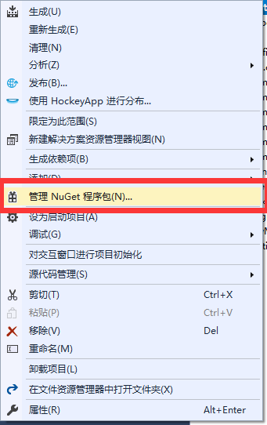
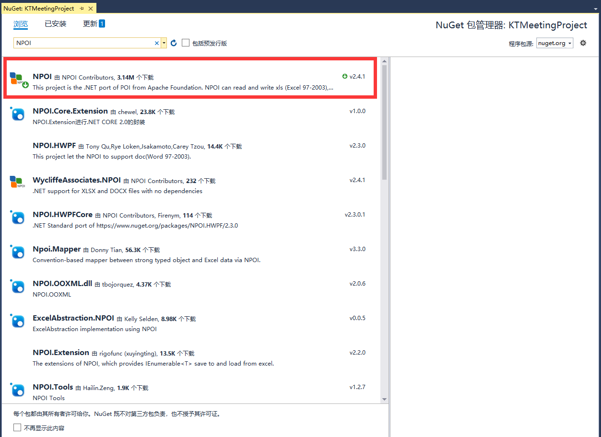
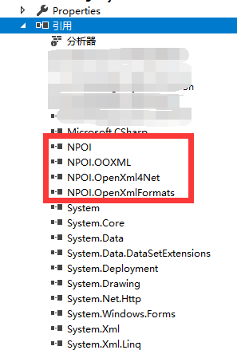

一、NPOI组件导入
右键项目菜单，“管理NuGet程序包”

直接搜索“NPOI”即会出现列表，下载第一个进行安装即可

安装完成后项目引用会出现以下几项

二、基础使用
添加引用
using NPOI.HPSF;
using NPOI.HSSF.UserModel;
using NPOI.SS.UserModel;Excel操作开始
HSSFWorkbook hssfworkbook = new HSSFWorkbook();//先创建Workbook
ISheet sheet= hssfworkbook.CreateSheet("Sheet1");//创建sheet页
IRow row1=sheet.CreateRow(0);//创建行
row1.CreateCell(0).SetCellValue("test");//创建单元格并设置值文件导出
FileStream file = new FileStream(sFilePath, FileMode.Create);
hssfworkbook.Write(file);
file.Close();三、样式及单元格操作
//设置列宽（字符宽度）
sheet.SetColumnWidth(0, 10 * 256);//第一列，10个字符宽度
//设置行高
row.HeightInPoints = 40;//高度（像素）
//设置网格的默认行高和列框
sheet.DefaultColumnWidth=100*256;
sheet.DefaultRowHeightInPoints = 30;//设置单元格样式
//样式创建
ICellStyle style = hssfworkbook.CreateCellStyle();
style.Alignment = NPOI.SS.UserModel.HorizontalAlignment.Center;//文字横向居中
style.VerticalAlignment = VerticalAlignment.Center;//文字纵向居中
IFont font = hssfworkbook.CreateFont();//字体
font.FontHeight = 20 * 20;
style.SetFont(font);
ICell cell = row.Cells[0];//获取单元格对象
cell.CellStyle = style;//绑定样式单元格合并
//单元格合并
sheet.AddMergedRegion(new NPOI.SS.Util.CellRangeAddress(0,0,0,8));//合拼了A1到I1文件的详细信息设置
//设置文件的详细信息
DocumentSummaryInformation dsi = PropertySetFactory.CreateDocumentSummaryInformation();
dsi.Company = "公司名称";//公司
SummaryInformation si = PropertySetFactory.CreateSummaryInformation();
si.Subject = "主题";//主题
hssfworkbook.DocumentSummaryInformation = dsi;
hssfworkbook.SummaryInformation = si;四、Excel文件读取
//根据路径获取读取xls文件
HSSFWorkbook wb = new HSSFWorkbook(new FileStream(@"C:\Users\Yc\Desktop\text.xls", FileMode.Open));
//获取sheet对象
ISheet sheet1 = wb.GetSheet("Sheet1");
//获取行
IRow row = sheet1.GetRow(0);
//获取单元格
ICell cell = row1.GetCell(0);读取完毕之后，按需操作内容即可
PS:最近用上了，想想还是记录一下的好